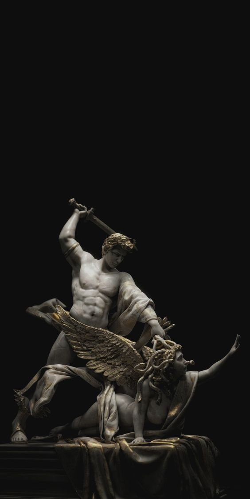
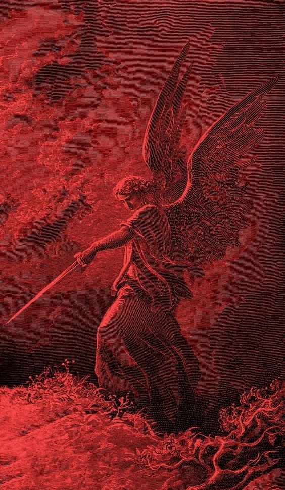

Yunan mitolojisi, Antik Yunanistan'da dünyanın yaratılışı, tanrı, tanrıça ve kahramanların hayatı
hakkındaki söylence ve öğretileri içermekle kalmayıp aynı zamanda Eski Yunan dininin gövdesini
oluşturmaktadır. Günümüzde, bu mitoloji hakkındaki bilgilerimizi bu sözlü edebiyatın yazılı hâllerinden
alıyoruz. Tarihçiler, mitoloji hakkında daha ayrıntılı bilgi almak için o dönemin sanatındaki ipuçlarını
bile toplar.
Genel olarak Yunan mitolojisi Yakın Doğu ve birçok Avrupa mitolojisini etkilemiştir. Yunan Tanrılarının
her biri Romalılar tarafından kabul görmüş ve farklı isimler kullanılmıştır. Roma mitolojisi neredeyse
tamamen Yunan mitolojisini baz almıştır. Yunan mitolojisindeki çoğu efsaneler de insan şeklindedir.
Yunan tanrılarının yaratılış hikâyeleri seçilmiş 12 tanrı (bu 12 tanrı, 4 kadın ve 8 erkekten
oluşmaktadır.) Olimpos Dağı'nda otururlar, her şey Olymposlu Tanrılarla Titanların savaşlarıyla başlar
ve Olymposluların zaferiyle son bulur. Savaştan sonra Titanlar cezalandırılır. Gaia, Khaos (Khaos zaten
Titanlar tarafından yok edilmişti.), Phoebe ve Kronos (bkz.: Titan) gibi Titanlar Tartarus'a gönderilir
(Tartoros bir titan fakat Tartarus sonsuzluğa kadar giden bir yeraltı yeridir.). Tartarus'ta sonsuza
kadar süren bir cezaya Olimpos Tanrıları tarafından bırakılır.
Yerküreyi taşımak ile cezalandırılan Atlas gibi, bununla birlikte Titanlardan Olimposluların yanına
geçen Titan tanrıları da vardır (örn. Prometheus). Yunan Tanrıları dünyayı Olympos Dağının
tepesindeki bulutların üzerinden idare ederler. Toplamda 12 Tanrı bulunur. Bu 12 sayısı hiç
bozulmaz, bir tanrı eklenirse bir başkası bu listeden çıkar. Örneğin Dionysos pantheona dahil
olduğunda Hestia Olimpos'tan ayrılmıştır. Şimşeklerin efendisi Zeus nice savaşlar vererek yönetimi
babası Kronos ve onun yardakçıları titanların elinden almış, 3 erkek kardeşiyle dünyayı bölüşmüştür.
Çekilen kuraya göre gökyüzü Zeus'a, denizler Poseidon'a, yeraltı da Hades'e düşer. Herkes görev
dağılımından sonra Olimpos'a çıkar ve dünyayı yönetmeye başlarlar ama Olimpos'un ve Olimpos
tanrılarının kralı Zeus'tur.
